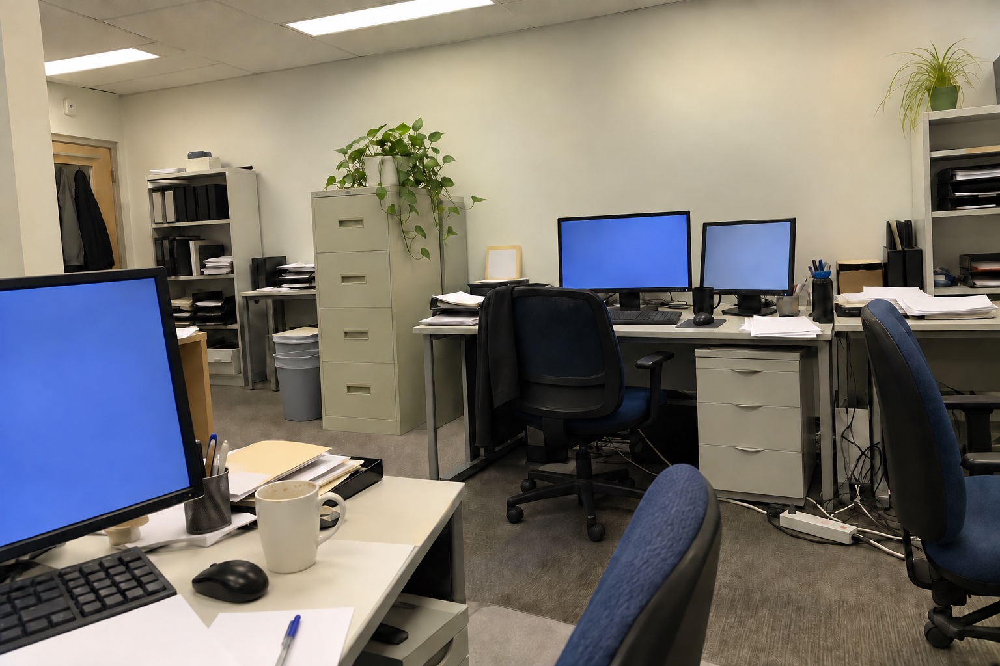

採用に取り組む企業さまへ。「一緒に働きたい」は、条件ではなく空気から生まれます。働く人の表情と職場の空気を、応募者に届く形で写しとります。

求人媒体、採用サイト、SNS。応募者が最初に見る「会社の顔」を、一日の撮影でまとめて揃えます。
※実案件に基づかないモデルケースです。課題設定は業界リサーチに基づく想定シナリオです。
求人ページの写真はフリー素材と数年前の集合写真だけ。応募者から「実際の雰囲気が分からない」と言われ、面接辞退も続く。職場の空気の良さが、社外に一切伝わっていませんでした。
働く人と職場の空気を一日で撮影。仕事に向かう表情、チームの何気ないやりとり、オフィスの光。採用サイト・求人媒体・SNSでそのまま使える、「この会社で働く自分」を想像させる素材をお届けします。

BEFORE
AFTER
ドラッグして比較 — 左：これまでの写真のイメージ ／ 右：EMORIAの撮影

採用の課題やターゲットに合わせて、撮影内容をご提案します。
お気軽にお問い合わせください。